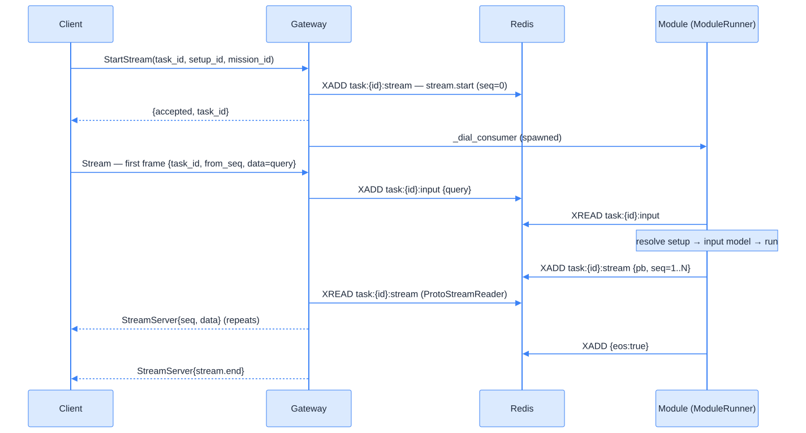

DigitalKin SDK¤
The Server: Redis-first transport & the new gRPC protocol¤
A platform walkthrough for the fullstack team
Sections: API · Architecture · Redis · Overall & comparison
Why this talk¤
It's now a platform, not a library: a thin Gateway, a Redis data+signal plane, and modules that never talk to each other directly.
Just as important — we deleted the old stack (Taskiq, RabbitMQ, SurrealDB, gRPC loopback) instead of porting it. What ships today is leaner, not bigger.
Three takeaways: (1) a 3-RPC API you integrate against · (2) Redis is the backbone — durability, reconnection, isolation, signals · (3) we optimized by removing, not adding.
v0.3.x → today¤
| v0.3.x — Library | today (Redis-first) | |
|---|---|---|
| Transport | direct gRPC to module | Redis Streams only |
| Gateway RPCs | — (module RPCs) | 3 (StartStream / Stream / SendSignal) |
| Signals | in-memory (broken x-proc) | Redis pub/sub, direct cancel |
| Durability | none | stream + state in Redis |
| Extra deps | Taskiq, RabbitMQ, SurrealDB | none — just Redis |
Where we started — v0.3.x pain¤
Client ── gRPC ──► ModuleServicer.StartModule ──► SingleJobManager ──► module.run()
(fresh instance per call) │
signals: DefaultTaskManager ────┘ (in-memory queues)
- Client talks straight to the module — no broker, no session, no capacity control.
- Signals broken across processes: gateway published, the in-memory manager listened elsewhere — cancel never reached the task.
- ~12 ms gRPC loopback floor on dispatch; no durability, no reconnection.
- Distributed mode meant Taskiq + RabbitMQ + SurrealDB — a second moving system.
Fine as a library. Not a platform.
Part 1 — The API¤
What a fullstack client actually talks to¤
Three RPCs. That's the whole surface.¤
service GatewayService {
rpc StartStream(StartStreamRequest) returns (StartStreamResponse); // unary
rpc Stream(stream StreamClient) returns (stream StreamServer); // BiDi
rpc SendSignal(ClientSignalRequest) returns (ClientSignalResponse); // unary
}
| RPC | Type | What it does |
|---|---|---|
StartStream |
unary | Reserve a task slot, dispatch the module. Returns {accepted, task_id}. |
Stream |
BiDi | First frame carries the query; server streams output frames back. |
SendSignal |
unary | Out-of-band: cancel a task, or invalidate caches. |
Source of truth for integrators: docs/gateway_protocol.md (Python + TS quick-starts).
Wire shape — flat messages, one discriminator¤
StartStreamRequest := { task_id, setup_id, mission_id }
StartStreamResponse := { accepted, task_id }
StreamClient := { from_seq, task_id, data: Struct } // client → gateway
StreamServer := { seq, task_id, data: Struct } // gateway → client
ClientSignalRequest := { task_id, action: SignalAction }
ClientSignalResponse := { success, task_id }
- No envelopes, no
oneof. Payload type lives insidedata.root.protocol. task_idis client-chosen (UUIDv4). It's the universal key: Redis, signals, logs, metrics.setup_idmust start withsetups:,mission_idwithmissions:.
One Struct shape everywhere:
data = { root: { protocol, … }, annotations: {} }.DataTrigger(theroot) +DataModel(the wrapper) — protocol routes to aTriggerHandler.
Lifecycle is in-band — the stream.* sentinels¤
Every control event is a normal data frame whose root.protocol starts with stream.:
protocol |
fields | meaning |
|---|---|---|
stream.start |
task_id, mission_id, setup_id, started_at | first entry, always (seeded by gateway) |
stream.error |
code, message, fatal | failure; if fatal=true, stream.end follows |
stream.end |
task_id | last entry, always — the universal terminator |
stream.init |
— | dial-back handshake (M2M) — see Part 2 |
- Single-terminator invariant: every stream ends with exactly one
stream.end. A fatal error is two writes —stream.error(fatal=true)thenstream.end. - Module domain output uses unprefixed protocols (
agui_*,text_chunk, …) — can't collide. codevalues follow gRPC status names (INVALID_ARGUMENT,NOT_FOUND,RESOURCE_EXHAUSTED…).
Errors are data, not exceptions¤
A misbehaving
Streamdoes not raiseAioRpcErrorfrom the iterator. It yieldsstream.error, thenstream.end, then closes cleanly.
async for msg in stub.Stream(client_stream()):
proto = msg.data.fields["root"].struct_value.fields["protocol"].string_value
if proto == "stream.start": continue
if proto == "stream.error": log(...); continue # fatal? stream.end is next
if proto == "stream.end": break
handle(msg.data) # your domain output
- Iterate the stream as data-only. Reserve
try/except AioRpcErrorfor transport faults (channel down, deadline exceeded) — not for application errors. - Why: one uniform observation surface across languages; errors persist in Redis (resumable).
Resume, cancel, invalidate¤
Resume — from_seq (no extra fields):
- Stateless (web UI): always send from_seq=0, replay from the top, ignore seq.
- Stateful (durable consumer): track highest seq, reconnect with from_seq=<that>.
Gap if seq != prev+1 → upstream trim. Resume window = Redis stream retention.
Cancel — SendSignal(action=CANCEL, task_id) → publishes on signal_ch:<task_id>; the
module shuts down; your Stream ends with the usual stream.end.
Invalidate — SendSignal(action=INVALIDATE_*) is server-wide, no task_id, does not touch
in-flight tasks (dict-swap preserves their refs):
INVALIDATE_ALL / CHANNELS / MODELS / SETUP / TOOLS / SHARED.
Part 2 — Design & Architecture¤
Three moving parts, one data plane¤
The component map¤

The gateway holds no data — only a session reference + a stop event. Everything durable is in Redis.
Request data flow — end to end¤

StartStream:156 · Stream:308 · _consume_from_redis:542 · module_runner._on_output:101
The task layer¤
core/task_manager/ — runs the module and supervises its lifecycle.
ModuleRunner.run()— one task end-to-end: setup → input model →preload_instance→run_instance. Maps failures to in-band errors:ValidationError → INPUT_VALIDATION_ERROR,BackpressureTimeoutError → BACKPRESSURE_TIMEOUT, anything else→ MODULE_RUNTIME_ERROR(viaon_fatal, which writesstream.error+stream.end).TaskExecutor— supervisor running two coroutines: the main task and the signal listener. Direct cancellation (noFIRST_COMPLETEDrace).BaseTaskManager— admission control: two semaphores,_system_gate(fast reject) +_task_slot(patient wait), plus a bounded queue.LocalTaskManagerruns in-process;RemoteTaskManagerregisters metadata for a worker.TaskSession— per-task state;pending_signal_actionis set by the signal listener.
Signal flow — out of band, never in the data path¤

- One
SharedRedisListenerper process (UUID id —getpid()is always 1 in Docker). signal_ch:{task_id}= per-task (cancel/stop).signal_ch:_global_= broadcast (invalidate).- No per-task queue, no batching layer in the receive path — direct
task.cancel(). - Listen loop self-heals: exponential backoff
0.1s → 10son Redis errors.
M2M & dial-back — modules calling modules¤
A module can be a consumer of another module. The gateway brokers it; the two never connect.
Gateway (gRPC client) Consumer module (gRPC server)
│ StreamClient{ data: stream.init } ─────►│
│ ◄──── StreamServer{ data: query } ──────│ consumer sends the query
│ StreamClient{ seq=N, data: output } ───►│ gateway pushes outputs (from Redis)
│ StreamClient{ data: stream.end } ──────►│ terminator
- Opt in with metadata
x-client-address: host:portonStartStream→ gateway dials back. M2MCallRegistryguards every outbound call: concurrency cap (200), per-target circuit breaker (open after 5 fails, 30 s probe), TTL sweeper (300 s) for calls whosefinallynever ran.- Same 3 RPCs, direction inverted — no extra proto.
Resilience surface — deliberately small¤
What actually ships today:
| Pattern | Where | Behaviour |
|---|---|---|
| Admission | BaseTaskManager |
_system_gate + _task_slot semaphores + bounded queue |
| Backpressure | module_runner write path |
throttle at 80% of maxlen, 30 s timeout → BACKPRESSURE_TIMEOUT |
| Circuit breaker | M2M + grpc_client_wrapper |
per-target fail-fast, no 30 s hangs on dead peers |
| Bulkhead | core/resilience/bulkhead.py |
per-service concurrency ceiling |
Left out, on purpose: WatchdogThread, SessionReaper, GracefulShutdown, StartupRestorer, checkpoints, Lua idempotency claims.
Every survivor earns its place on the hot path. The rest was speculative.
Part 3 — Redis¤
The backbone: durability, decoupling, reconnection, signals¤
Why Redis carries everything¤
The producer (module) and consumer (client) are decoupled in time:
- Durability — output is persisted before the consumer reads it. Process dies → tokens survive.
- Reconnection — client drops and resumes from
from_seq; no data lost in the window. - Isolation — modules see only Gateway + Redis, never each other. Clean M2M boundary.
- Cross-process signals — pub/sub reaches a task in another process in ~1–2 ms (the thing the old in-memory manager could not do).
- Horizontal scale — session state in Redis means any gateway instance can serve any stream.
The cost is a real dependency (a SPOF) and a few ms per hop. Part 4 covers the trade.
The Redis key map (current)¤

Gone vs the old design: checkpoint:{id}, idem:{id} (Lua claims), checkpoints:active,
signal:{id} hash. Durability now rides on the stream + state hash alone.
RedisClient — split pools¤
One connection manager, built at startup and injected everywhere (DI). The gateway borrows it — never owns or closes it.
# two independent pools over the same URL, raw bytes (no decode)
self._client = Redis.from_url(url, max_connections=default_size, decode_responses=False)
self._blocking_client = Redis.from_url(url, max_connections=blocking_size, decode_responses=False)
- Why split: a blocking
XREADholds its connection for up toblock_ms. Under load, many readers on a shared pool exhaust it and stall writers. Isolating the reader pool meansXADD/HSET/PUBLISHalways have a free connection. _client(non-blocking):XADD,HSET/HGETALL,PUBLISH/pubsub,GET/SET,EXPIRE,pipeline…_blocking_client: onlyXREAD.decode_responses=False— values stay raw bytes, so the proto read is true zero-copy (ParseFromString).- Sizing:
POOL_SIZE=2000, auto-split 50/50; override each side withPOOL_SIZE_DEFAULT/POOL_SIZE_BLOCKING. verify()pings both pools concurrently at boot (gather+ 5 s timeout) → first XADD/XREAD skip cold DNS+TCP+AUTH. The gateway refuses to start if either ping fails.health_check_interval=15 sPINGs idle sockets — silently-dead connections are caught early, not mid-stream.
Streams — the hot path¤
Two keys per task: :stream (module → gateway → client) and :input (client → gateway → module).
Write — module side, module_runner._on_output: a direct XADD (no writer abstraction).
seq=0 stream.start ← seeded by the gateway in StartStream
seq=N XADD :stream {pb, seq} MAXLEN ~1000 (approx trim) ← one per output chunk
first XADD arms EXPIRE 600s ; stream.end → XADD {eos:"true"} + EXPIRE 60s
Read — gateway side, ProtoStreamReader, zero-copy:
XREAD {:stream: last_id} block=50ms count=50 (dedicated blocking pool)
bytes → Struct.ParseFromString() ~0.1–0.5 ms
vs JSON: json.loads → dict → update ~3–8 ms
seqmonotonic from 1 → gap detection; theeos:"true"marker ends the read loop.- Cursor (
:cursor) saved every 100 entries (TTL ~6 min) → a crash re-reads ≤ 100 entries, not the whole stream. - Poison entry (corrupt
pb) is dropped and logged per item — the stream stays alive. - Backpressure: the writer throttles at 80 % of
maxlen, 30 s ceiling →BACKPRESSURE_TIMEOUT. ProtoStreamWriter(old adaptive single/batch flush) — removed; per-XADDis fast enough and leaves no buffer to flush or lose on crash.
State & signals in Redis¤
State — the P1 invariant (RedisStateManager):
pipe.hset("task:{id}", mapping={status, started_at, …})
pipe.expire("task:{id}", task_ttl) # HSET + EXPIRE in one round-trip
await pipe.execute() # Redis write BEFORE in-memory update
If the process dies between the Redis write and the memory update, the system is still consistent — Redis is the source of truth. TTL 24 h, auto-reaped.
Signals — SharedRedisListener: one PSUBSCRIBE signal_ch:* per process; JSON payload
carries action, published_at_ns (latency audit), and origin (skip self-invalidation).
Dedup on the raw JSON guards against pub/sub replay.
Part 4 — Overall¤
Comparison and trade-offs¤
Old vs new — at a glance¤
| Dimension | v0.3.x (library) | today (Redis-first) |
|---|---|---|
| Primary transport | direct gRPC to module | Redis Streams |
| Gateway RPCs | none (rich module API) | 3 (Start/Stream/Signal) |
| Producer → gateway | gRPC loopback (~12 ms) | module XADDs to Redis |
| Lifecycle / errors | proto enums + gRPC status | in-band stream.* sentinels |
| Signals | in-memory (broken x-proc) | Redis pub/sub (~1–2 ms) |
| Durability / resume | none | stream + state hash + from_seq |
| Module isolation | caller hits module | A ↔ Redis ↔ GW ↔ Redis ↔ B |
| Heavy deps | Taskiq, RabbitMQ, SurrealDB | none — just Redis |
| API ownership | module exposes its own gRPC (~10 RPCs) | gateway owns the API; module = business logic |
Business ⊥ API. In v0.3.x the module server was the API — business logic and transport
coupled in one ModuleServicer. Now the gateway owns the API surface (transport, sessions,
streaming, signals, resilience); the module is pure business logic — read input, write output
to Redis. Change the wire without touching a module; change a module without touching the wire.
What we deliberately removed¤
The biggest design decision was subtraction:
- Infra: Taskiq workers, RabbitMQ (
rstream,aio-pika), SurrealDB,asyncio-inspector. - Transport: gRPC loopback, the
ProduceStream/ConsumeStreamRPCs, theGatewayResponseenvelope,StreamStatus/ServerHeartbeat/Checkpointmessages. - Machinery:
ProtoStreamWriter, Redis checkpoints, Lua idempotency claims, WatchdogThread, SessionReaper, GracefulShutdown, StartupRestorer, the CB interceptor.
Every removal collapsed a code path. The 3-RPC + sentinel surface can express everything the deleted messages did — so they had to justify their existence, and couldn't.
The numbers — SDK overhead (microbenchmarks)¤
| Metric | v0.3.x | today | note |
|---|---|---|---|
| Dispatch (client → task start) | ~25 ms | ~3 ms | gRPC loopback → Redis XADD |
| Module init (2nd+ call) | ~441 ms | ~185 ms | context.shared server-lifetime cache |
| Signal delivery | broken (in-proc only) | working, ~1–2 ms | Redis pub/sub |
| Throughput ceiling (healthcheck) | ~25 req/s, 49% errors @ c=100 | absorbs burst via queue | admission + queue |
⚠️ Directional: v0.3.x = March-2026 Railway benchmark, today = local micro-probes — not a controlled A/B. Real, current end-to-end numbers on the next slide.
Real-env load test — 50 × 1200 s, hosted platform¤
Setup: laptop → 50 workers → Railway gateway, dial-back over ngrok, agentic module (~27 events/call), uvloop + client gzip off, 180 s call timeout. (2026-06-18)
| Metric (p50 / p95 / p99) | value |
|---|---|
| Transport first byte — StartStream → 1st msg | 86 ms / 145 ms / 294 ms |
| 2nd message | 181 ms / 273 ms / 843 ms |
| Model TTFT — → 1st text | 13.8 s / 21.0 s / 25.4 s |
Full call — → stream.end |
21.5 s / 30.2 s / 34.7 s |
- 2,734 calls · 2.28 iter/s · 61.6 msg/s · 0 failures over 20 min; throughput + p50 latency flat the whole run (CoV 0.20).
- Transport: first byte p50 86 ms, max 695 ms, 0 calls > 1 s; 0 calls exceeded even a 60 s ceiling (max full call 47.9 s). The ~21 s call is almost all LLM (TTFT 13.8 s).
- Remaining tail is model-side: 1,249 mid-stream gaps > 10 s (LLM pauses), not transport.
Trade-offs — eyes open¤
Gained: crash durability · from_seq reconnection · module isolation · ~1–2 ms cross-process
signals · capacity/admission control · a 3-RPC surface anyone can integrate against.
Paid:
| Cost | Why it's worth it | Mitigation |
|---|---|---|
| Redis is a SPOF | durability, reconnection, isolation, signals | HA Redis; gateway fails fast on boot if unreachable |
| +~1 ms per state write | crash-consistent state (P1) | HSET+EXPIRE pipelined, 1 RTT |
| +~1 ms per output chunk | durable + resumable output | maxlen-bounded stream, batched reads |
| +1 gateway hop | full module isolation + signals | required; ~0.5 ms |
Config — typed, scoped, one factory each¤
All knobs are pydantic-settings, scoped by prefix, read via an @lru_cache factory:
| Prefix | Controls |
|---|---|
DIGITALKIN_REDIS_ |
pool size/split, TASK_TTL, CURSOR_TTL, health check |
DIGITALKIN_REDIS_STREAM_ |
MAXLEN, TTL, batch size |
DIGITALKIN_GATEWAY_ |
MAX_STREAMS, dial-back idle/lifetime/grace |
DIGITALKIN_GATEWAY_STREAM_ |
stream MAXLEN/TTL, READ_BLOCK_MS, from_seq ceiling |
DIGITALKIN_STREAM_ |
backpressure threshold/timeout |
DIGITALKIN_M2M_ |
concurrency cap, breaker, TTL sweeper |
DIGITALKIN_SIGNAL_ |
signal queue/batch sizes |
No bare DIGITALKIN_, no per-field copies — get_*_settings() everywhere.
Testing — tiers map to the failure modes¤
Markers declared in pyproject.toml; target a concern with uv run pytest -m <marker>.
| Marker | Active | Covers |
|---|---|---|
grpc · integration |
129 · 109 | gateway / RPC behavior · real Redis + gRPC |
smoke |
62 | critical path, always-green |
edge_case · validation |
28 · 27 | boundaries · input / schema |
property · regression |
4 · 4 | Hypothesis invariants · fixed bugs |
stress · chaos · flaky |
2 · 1 · 1 | load · fault injection · quarantine |
- Real-Redis rule: fakeredis /
_FakePubSubunit tests are paired withintegrationtests against the dockerized Redis. CI deselects with-m "not integration". - Declared but not yet populated:
concurrency,contract,e2e,idempotency,stability— taxonomy is ready, coverage is aspirational (idempotencythe feature is gone).
Takeaways¤
For the fullstack team:
1. Integrate against 3 RPCs; dispatch on data.root.protocol; treat the stream as data-only.
2. stream.start … your output … stream.end. Errors are frames, not exceptions.
3. Cancel via SendSignal; resume via from_seq; push mode via x-client-address.
The three things: API — 3 RPCs, sentinels, errors-as-data · Redis — the durable backbone (streams, state, signals, resume) · Lean — we shipped by deleting.
Reference: docs/gateway_protocol.md (Python + TS quick-starts) · code: grpc_servers/gateway_servicer.py, core/task_manager/.